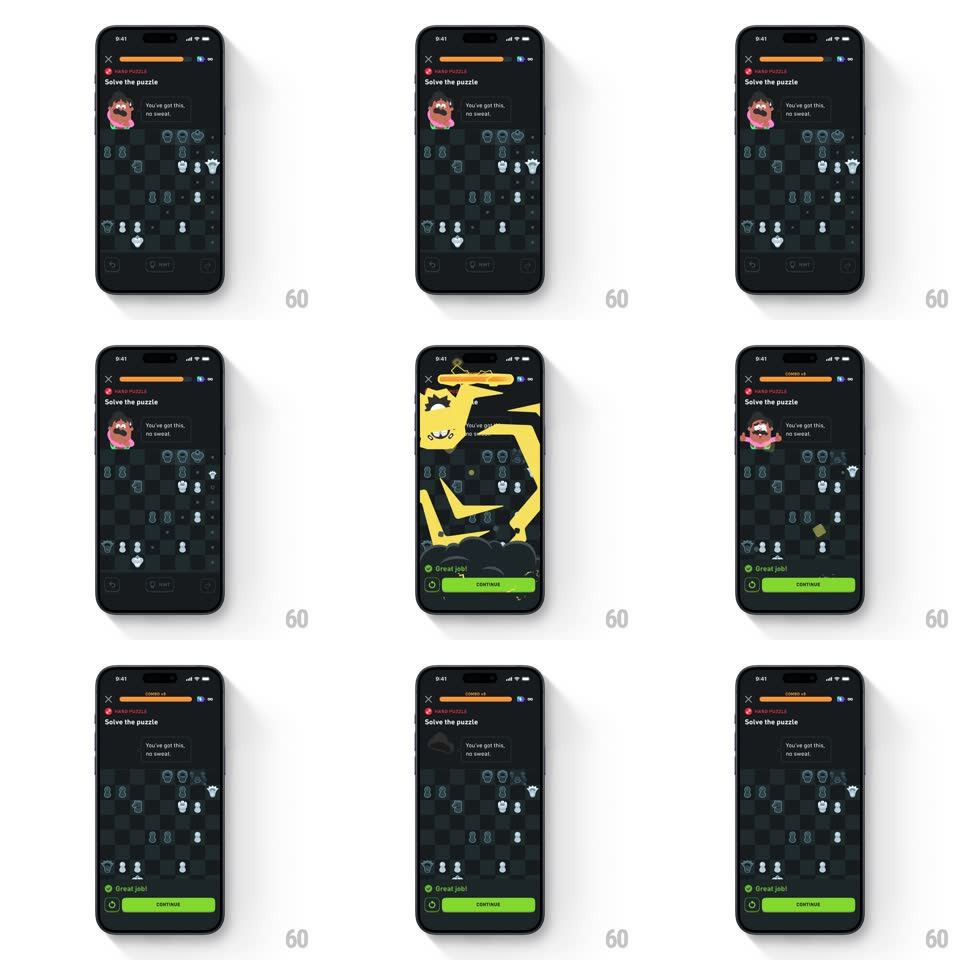

Media
Frame-by-frame

Rebuild this animation 1:1: Duolingo Chess' combo thunder - solve the panic puzzle and a giant lightning bolt crashes down the whole screen while Oscar tumbles, the combo counter bumps, and the success sheet slides up with confetti.

Rebuild this animation 1:1: Duolingo Chess' combo thunder - solve the panic puzzle and a giant lightning bolt crashes down the whole screen while Oscar tumbles, the combo counter bumps, and the success sheet slides up with confetti.
## Integration
Integration: stack-agnostic spec - springs given as stiffness/damping, timed motions as duration + curve; map every value to your framework and animation library of choice.
## Scene
Duolingo Chess puzzle, near-black: "Solve the puzzle" title with a "PANIC PUZZLE" tag, close X, the progress bar (orange combo segment), Oscar top-left with his bubble ("You've got this, no sweat."), the chess board, and the success sheet ("Great job!" with a green Continue button).
## Motion spec
Pattern: full-screen lightning strike with a falling mascot and confetti sheet.
- The correct move lands (piece slide, 250ms), then the bolt: a thick jagged lightning column draws from the top edge to the board (stroke draw, 150ms, bright yellow) with one 80ms white flash at 20% opacity.
- The strike knocks Oscar loose: he tumbles downward with rotation (translateY ~140px, rotate ~200deg, 600ms, ease-in then bounce) as small confetti squares scatter around his fall.
- The progress bar's combo tag bumps ("COMBO x4", scale 1 -> 1.25 -> 1, spring ~450/14) and the orange segment fills (250ms).
- Oscar lands at the bottom of his area, dazed (eyes as spirals, one wobble, 300ms), then rights himself.
- The success sheet slides up (translateY 100% -> 0, spring ~320/20): green check, "Great job!", Continue - 250ms after Oscar lands.
## Calibration
- The bolt is screen-scale - it spans from the status bar to the sheet, wider than the combo-5 variant's strike.
- Oscar's tumble is the joke: he must actually leave his anchor position, not just shake.
## Reduced motion
Skip the bolt and tumble; Oscar wobbles once and the sheet fades up.
## Don't miss
- The bubble text ("You've got this, no sweat.") stays put while Oscar falls - the words hang where he was.
- The combo segment is orange against the bar's green base - the tier reads before the number does.